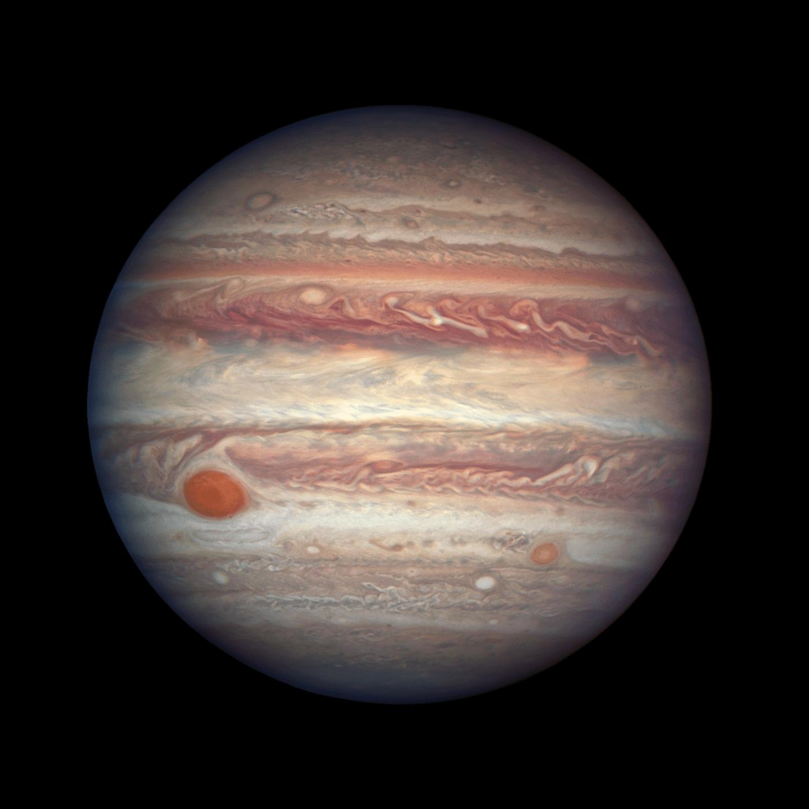

Jupiter je největší planeta Sluneční soustavy a pátá planeta od Slunce. Jedná se o plynný obr složený převážně z vodíku a helia.
Jupiter nemá pevný povrch jako Země. Je tvořen hustými vrstvami plynů a pod nimi se nachází kapalný vodík. Atmosféru pokrývají barevné pásy mraků.
Atmosféra Jupiteru je velmi bouřlivá. Nejznámější útvar je Velká rudá skvrna – obrovská bouře větší než planeta Země, která trvá stovky let.
Jupiter má více než 90 měsíců. Největší z nich je Ganymed, který je větší než planeta Merkur. Jupiter má také slabé prstence.

Jupiter je tak velký, že by se do něj vešlo více než 1 300 planet velikosti Země. Jeho průměr je přibližně 143 000 kilometrů.
Jupiter má nejsilnější magnetické pole ze všech planet Sluneční soustavy. Jeho magnetosféra je obrovská a chrání planetu před částicemi ze Slunce.